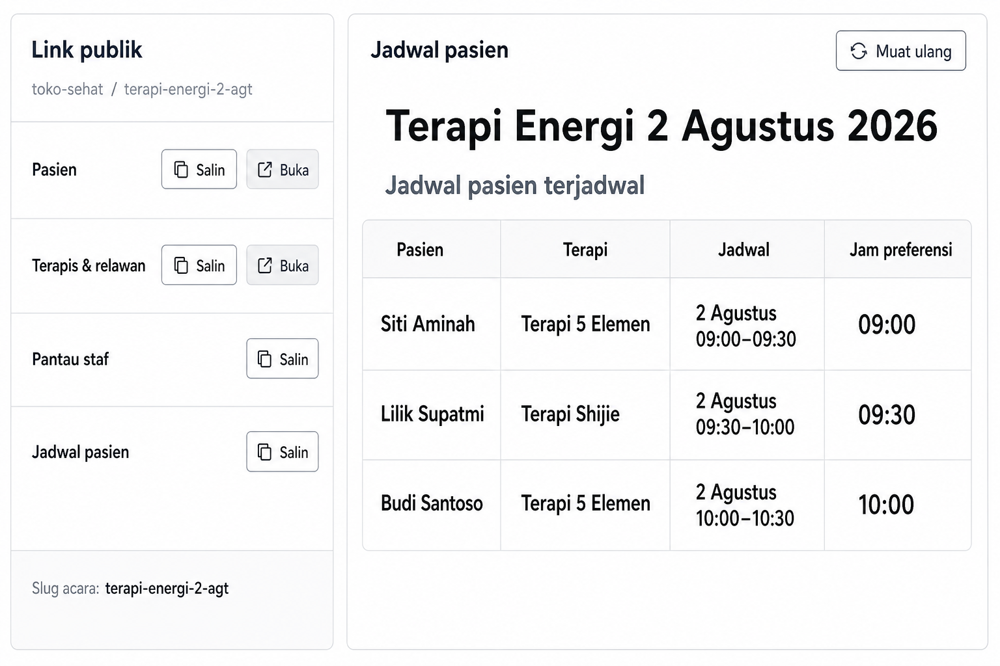

Preview statis (bukan Figma). Buka file ini di browser. Desain mengikuti panel dashboard
shadcn yang disederhanakan dan halaman /jadwal dengan tipografi lebih besar.
toko-sehat / terapi-energi-2-agt
| Pasien | Terapi | Jadwal | Jam preferensi |
|---|---|---|---|
| Siti Aminah | Terapi 5 Elemen | 2 Agustus 2026 09:00–09:30 | 09:00 |
| Lilik Supatmi | Terapi Shijie | 2 Agustus 2026 09:30–10:00 | 09:30 |
| Budi Santoso | Terapi 5 Elemen | 2 Agustus 2026 10:00–10:30 | 10:00 |
